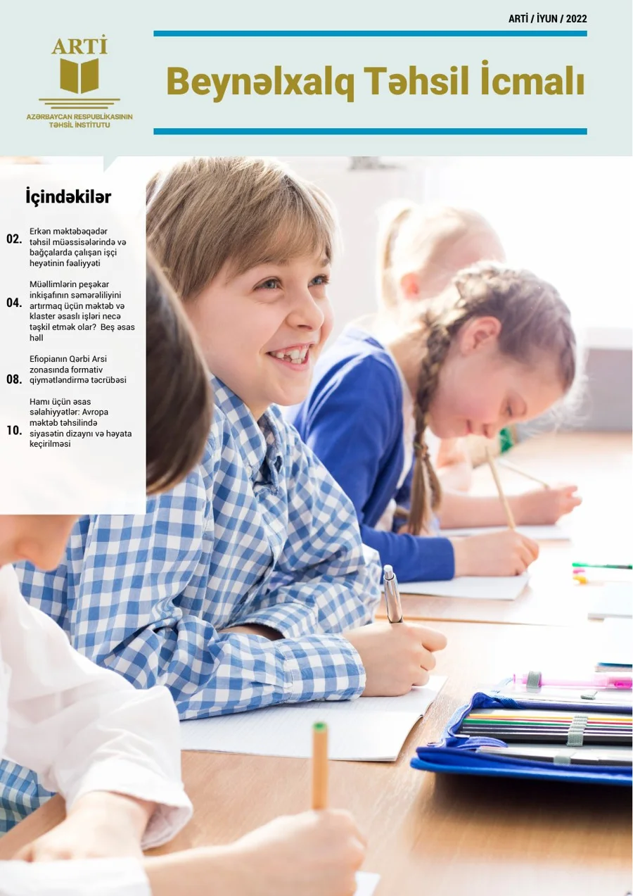
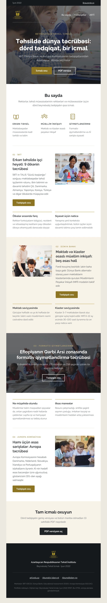
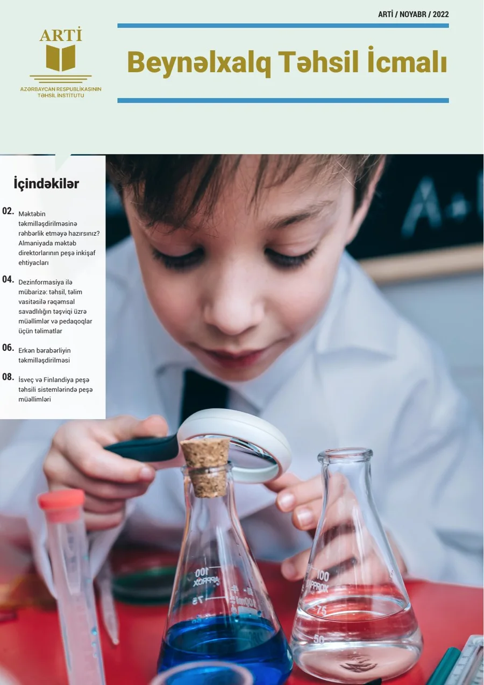
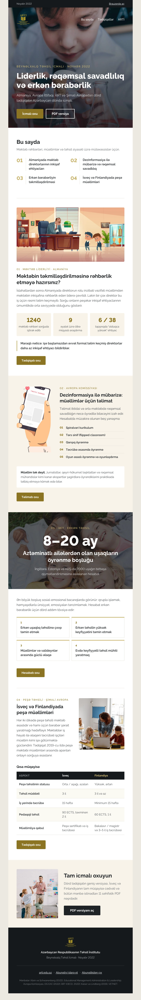

Email Campaign Design & Development · Four chapters
Emails, designed to be experienced.
From engaging campaign communications to executive-level retail intelligence.
Chapter 01 is shown from the original HTML. Chapter 02 is a labelled reconstruction, because the original issues no longer exist. Chapter 03 adapts two PDF publications into email. Chapter 04 is an independent concept.
Chapter 01
TISA
Campaign Communications
Four years of weekly newsletters and campaigns for The International School of Azerbaijan. Email was the school's main line to families, so every Friday issue had to be read on a laptop at work and on a phone at the school gate.
The Friday inbox
Every Friday, one email carried the school week to families. A new message is arriving. The email inside it is the original HTML.
Inbox
1 new messageEvery Friday · Sent through Campaign Monitor
Open the new message to read the original newsletter
- 4 years Communications, External Relations and Publishing Coordinator
- Every Friday The TISA Weekly Look Ahead
- Original HTML Built in Campaign Monitor
- Design to send Graphics, build, testing, delivery
Original material from the 2021 email Reconstruction drawn for this portfolio
01 · The newsletter
One Friday, from masthead to footer.
The TISA Weekly Look Ahead of 27 August 2021, rendered from its original HTML. Scroll, and the issue scrolls with you.
02 · Archive
Eight ways into one issue.
Each Friday issue carried many campaigns at once: events, announcements, community news. Open any of them to see it in place in the original email.
Not yet in the archive Tour TISA and the other promotional emails. Their original files are still being recovered, so they are not shown here.
03 · Production
From design to delivery, every week.
Four stages turned a Thursday inbox of submissions into a Friday email. Each stage below is shown with material from the 27 August 2021 issue.
04 · The markup
Designed to be opened.
Built to be experienced.
An email has to survive Gmail, Outlook and a phone in one hand. Select a part of the newsletter to see the markup that carried it.
Header
Verified in the 2021 source file
- Built in Campaign Monitor's email builder, on its "The Blueprint" template.
- 34 Outlook-only conditional blocks, 7 media queries and a VML button, all from the platform's template.
- Sent through Campaign Monitor as a preview on Friday 27 August 2021. That preview is the file this case study is built from.
Skills I bring to email today
- Reading and editing template HTML with inline CSS.
- Responsive email layout: hybrid columns, media queries, image scaling.
- HTML and CSS in my current work, for interactive campaign previews built before development.
05 · Four years
Every Friday.
For four years.
The Weekly Look Ahead turned each school week into one email: the Director's letter, the classrooms, the calendar, the community. These are pages from the issue of 27 August 2021, the first original recovered from the archive.
Chapter 02
PASHA Malls
Executive Retail Intelligence
A monthly newsletter written for senior management. At the end of each month it summarised what had changed across major shopping malls in eight countries, so executives could see the retail picture in one read.
The brief
A month of retail news, read in minutes.
Senior managers did not need every store update. They needed to know what had moved, where, and what was coming. The newsletter carried the month's developments in a fixed order, so each issue could be read the same way: overview first, detail after, summary last.
What each issue covered
- Major shopping mall developments
- New retail brands entering malls
- Store openings
- Store closures
- Retail tenant changes
- Upcoming openings
- Expansion announcements
- Future retail development plans
- Important retail industry updates
My contribution
- Email communication design Layout and typography for a reader with little time.
- Information architecture A fixed section order, from overview to summary.
- Visual storytelling Turning market updates into tables, timelines and simple charts.
- HTML email production Building and sending the issue in Mailchimp.
- Executive communication Short, plain headlines that state the point first.
- Campaign presentation A consistent monthly format that readers learned to scan.
The briefing
The last working day of the month.
The briefing arrived in executives' inboxes at month end. Open it to read the reconstructed issue, at desktop or phone width.
-
Retail Intelligence Previous month Monthly Retail Intelligence | Executive Briefing Original issue not recovered
-
Retail Intelligence Two months ago Monthly Retail Intelligence | Executive Briefing Original issue not recovered
Waiting for the month-end briefing
To: Senior management
Monthly Retail Intelligence | Executive Briefing
Inbox styled for the portfolio. Earlier issues are shown as rows only: their originals were not kept.
Anatomy of an issue
Seven sections, one reading order.
The order never changed. An executive with two minutes reads the first and last sections. One with ten reads everything in between.
Inside the data
Eight markets, one view.
In the email, the landscape is a table, because that is what every inbox can render. Here the same sample data can be explored one market at a time.
Illustrative data for sample markets A to H. Not historical figures.
Email build
Built for the inbox, not the browser.
Executives read on Outlook at the desk and on a phone between meetings. The reconstruction follows the same limits the original had to respect.
- Tables for layout No flexbox or grid inside the email. Columns are table cells that stack on a phone.
- Inline styles Every style sits on its element, so clients that strip the head still render the issue.
- System fonts Georgia for headlines, Arial for text. No web fonts to fail in Outlook.
- Charts without images Bars are coloured table cells, so the chart reads even with images off.
- One media query Below 620 px the columns stack and the type steps down.
- No scripts Interaction lives in this portfolio page, never inside the email.
<tr>
<td width="22%" style="font-family:Georgia,serif;
font-size:15px;color:#16181D;">Market C</td>
<td width="33%" align="right"
style="border-right:1px solid #16181D;"> </td>
<td width="33%">
<table role="presentation" width="100%"
cellpadding="0" cellspacing="0">
<tr><td height="12" bgcolor="#16181D"
style="font-size:0;line-height:0;"> </td></tr>
</table>
</td>
<td width="12%" align="right"><b>+6</b></td>
</tr>Chapter 03
ARTİ
From research publication to email
Two issues of Beynəlxalq Təhsil İcmalı, a research digest I designed for the Education Institute of the Republic of Azerbaijan. The originals were print-style PDF publications. Here they are adapted into responsive HTML emails that share one design system.
Issue 01 · June 2022
Four studies, one digest.
Early childhood staff (OECD), cluster-based teacher development (World Bank), formative assessment and EU key competences. Each multi-page article becomes one module: kicker, headline, a short summary, one proof point, one link.
- Composition
- Centered hero, icon columns, alternating image and text, full-bleed photo band
- Original
- 13-page PDF, InDesign


Scroll inside the window to read the whole email.
Issue 02 · November 2022
Figures lifted out of the text.
Principals' development needs in Germany, EU guidelines on disinformation, OECD early equity and vocational teachers in Sweden and Finland. Numbers buried in body text become a stat strip, a headline statistic and a five-row comparison table.
- Composition
- Bottom-anchored hero, numbered index, stat strip, headline-statistic band, comparison table
- Original
- 11-page PDF, InDesign


Scroll inside the window to read the whole email.
One system, two issues
The frame stays. The layout follows the content.
Masthead, top bar, typography, buttons and footer are identical across issues. Section compositions change to fit each issue's topics and assets.
Shared across the series
Top bar, logo and navigation, Raleway type scale, gold button and outline button, ivory section colour, dark footer with the institute name.
Specific to each issue
Hero composition, contents block, section layouts, data modules, photo choice and cropping.
Readability
15 px body on 24 px leading, short lines in two-column layouts, ink on white and ivory, gold kept for numbers, kickers and buttons.
Chapter 04
NARGIS
The Edit · custom HTML newsletter
A fashion and lifestyle newsletter concept built around the magazine's real articles: a lead story on camel tailoring, couture and the Baku runway, a numbered beauty list, a five-piece product edit and the editor's three links.
The Edit
The quiet power of camel.
Masthead and category nav, a full-width hero, two-up couture and runway cards, a full-width craft story, a numbered beauty list, music and art, an interview, the product grid and a short sign-off. Each module has its own rhythm, so a long issue reads like turning pages.
- Modules
- 11, from masthead to footer
- Build
- Tables, inline CSS, hybrid two-up columns
Scroll inside the window to read the whole email.
End of the email ·
End of all four chapters
Back to the portfolio →TISA: student photographs are blurred, and student names and personal email addresses are covered. Everything else in the newsletter is shown as it was sent. PASHA Malls: a reconstruction of the format; all content inside the email is illustrative. ARTİ: HTML adaptations of PDF issues, never sent. NARGIS: an independent concept, not affiliated with NARGIS Magazine; photography from Unsplash.
End of the briefing ·